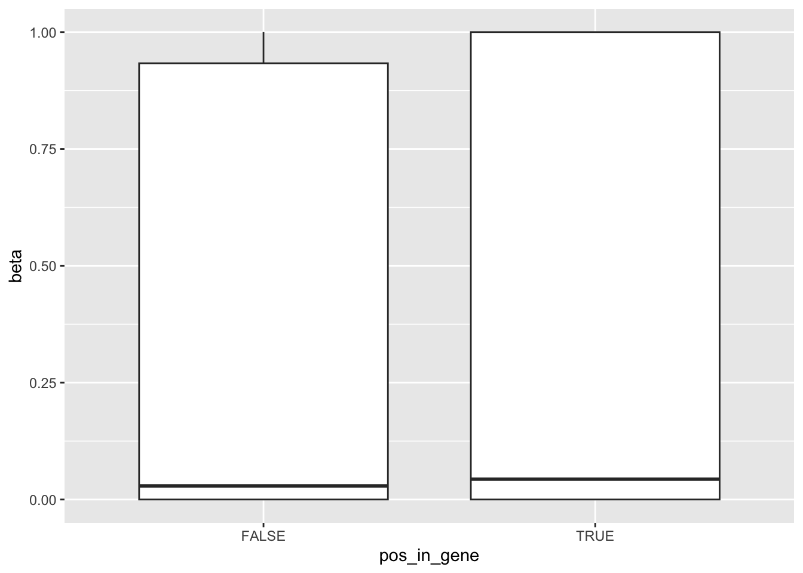
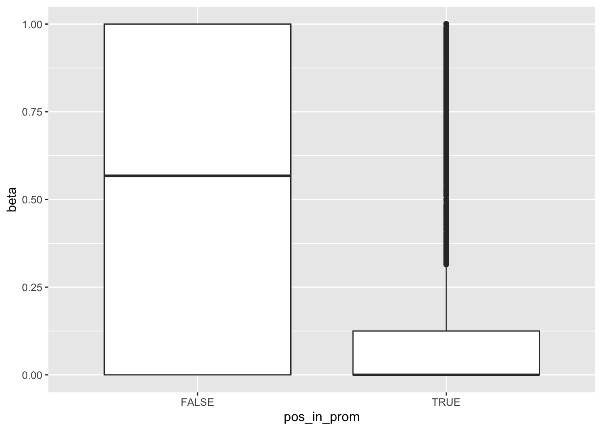
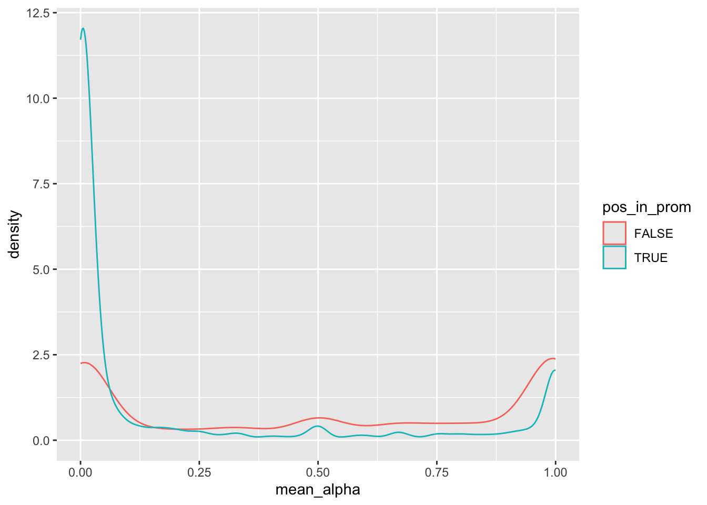
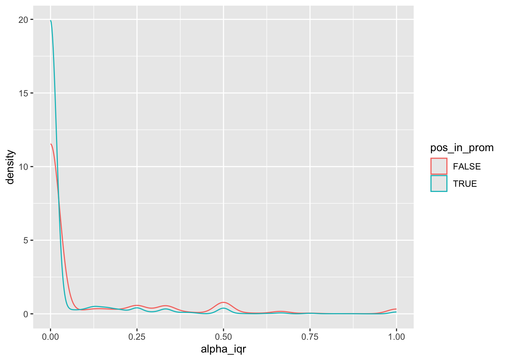
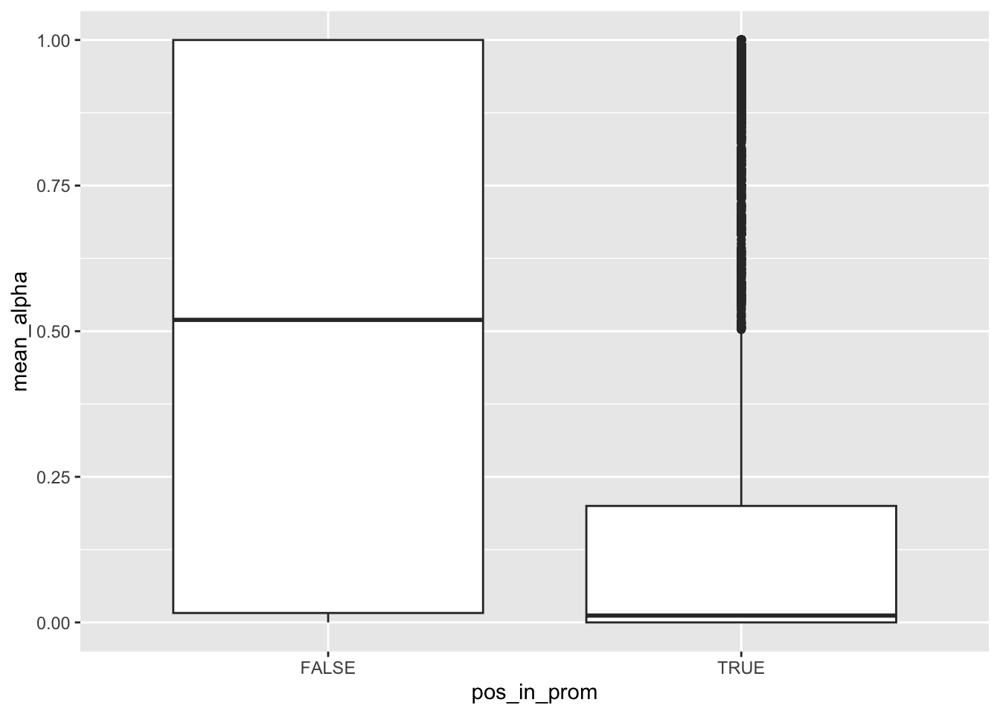
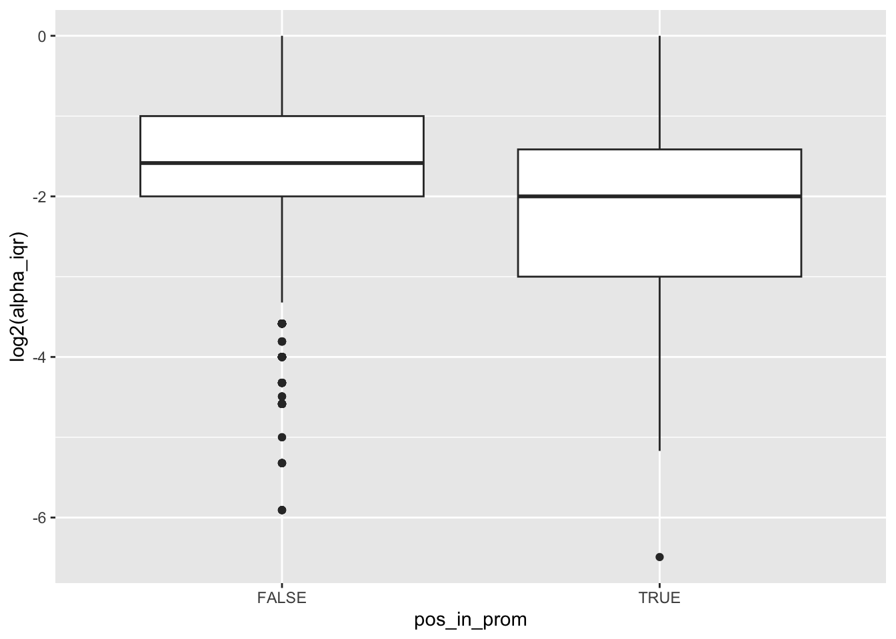
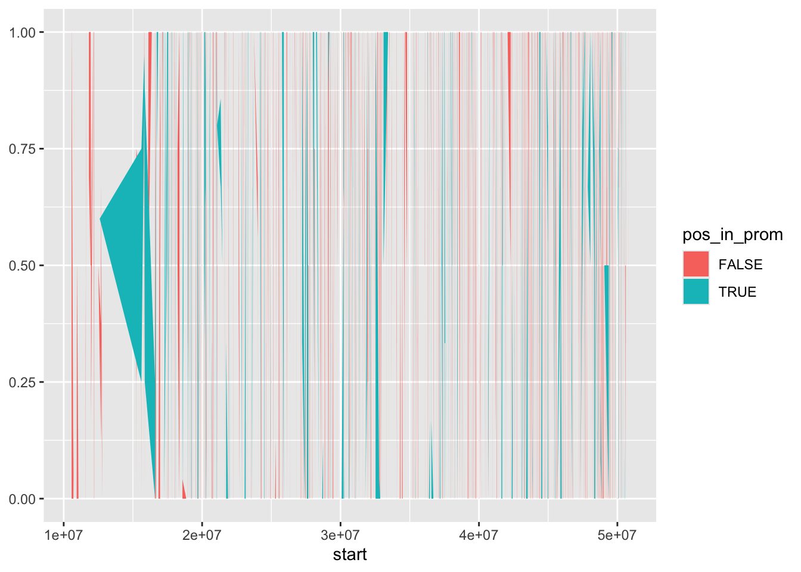
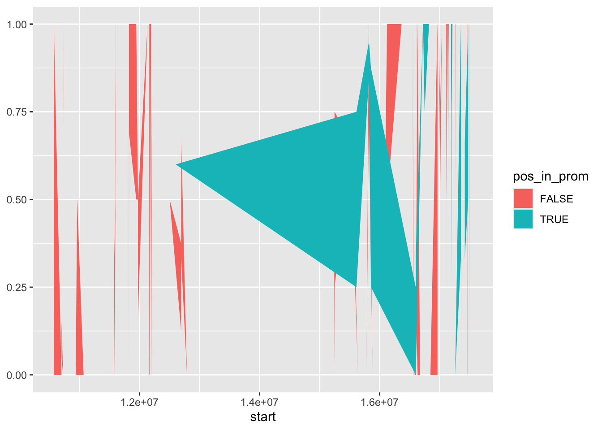
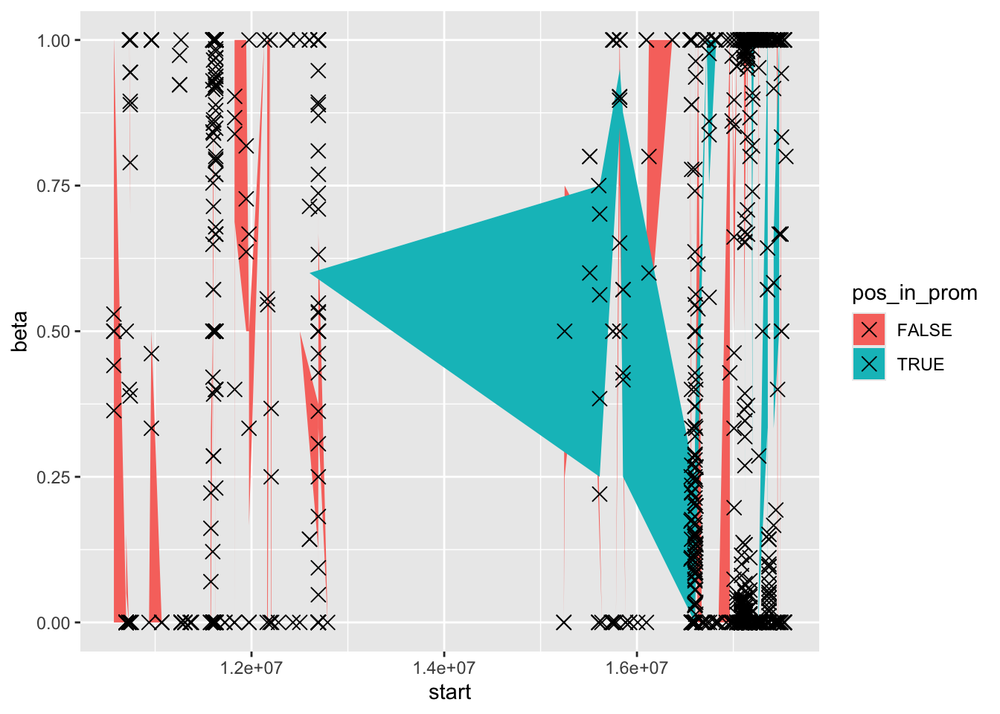

biologicalFeatures
Caitlin Page
2025-12-02
Last updated: 2025-12-02
Checks: 7 0
Knit directory: 3_cf_nano/analysis/
This reproducible R Markdown analysis was created with workflowr (version 1.7.1). The Checks tab describes the reproducibility checks that were applied when the results were created. The Past versions tab lists the development history.
Great! Since the R Markdown file has been committed to the Git repository, you know the exact version of the code that produced these results.
Great job! The global environment was empty. Objects defined in the global environment can affect the analysis in your R Markdown file in unknown ways. For reproduciblity it’s best to always run the code in an empty environment.
The command set.seed(20250606) was run prior to running
the code in the R Markdown file. Setting a seed ensures that any results
that rely on randomness, e.g. subsampling or permutations, are
reproducible.
Great job! Recording the operating system, R version, and package versions is critical for reproducibility.
Nice! There were no cached chunks for this analysis, so you can be confident that you successfully produced the results during this run.
Great job! Using relative paths to the files within your workflowr project makes it easier to run your code on other machines.
Great! You are using Git for version control. Tracking code development and connecting the code version to the results is critical for reproducibility.
The results in this page were generated with repository version ba1d686. See the Past versions tab to see a history of the changes made to the R Markdown and HTML files.
Note that you need to be careful to ensure that all relevant files for
the analysis have been committed to Git prior to generating the results
(you can use wflow_publish or
wflow_git_commit). workflowr only checks the R Markdown
file, but you know if there are other scripts or data files that it
depends on. Below is the status of the Git repository when the results
were generated:
Ignored files:
Ignored: .DS_Store
Ignored: .Rhistory
Ignored: .Rproj.user/
Ignored: code/Fragmentomics_GenomBiol-main/
Ignored: code/dist_modkit_v0.5.0_5120ef7_candle/
Ignored: code/dist_modkit_v0.5.0_5120ef7_tch/
Ignored: code/modkit-0.5.0/
Ignored: code/modkit_v0.5.0_5120ef7/
Ignored: code/uses_biscuit/
Ignored: data/cfnano_paper/
Ignored: data/ncbi_dataset/
Ignored: data/rrbs/
Ignored: output/bedtools/
Ignored: output/biscuit/
Ignored: output/cluster_files/
Ignored: output/html docs - versions/
Ignored: output/modkit/
Ignored: output/nanoplot/
Ignored: output/research_sprint/
Ignored: output/samtools/
Ignored: output/schematics/
Ignored: renv.lock
Ignored: renv/
Unstaged changes:
Modified: .Rprofile
Modified: .gitignore
Modified: 3_cf_nano.Rproj
Modified: _workflowr.yml
Modified: analysis/00_importantObjects.Rmd
Modified: analysis/01a_bedFileCorrelation.Rmd
Note that any generated files, e.g. HTML, png, CSS, etc., are not included in this status report because it is ok for generated content to have uncommitted changes.
These are the previous versions of the repository in which changes were
made to the R Markdown (analysis/biologicalFeatures.Rmd)
and HTML (docs/biologicalFeatures.html) files. If you’ve
configured a remote Git repository (see ?wflow_git_remote),
click on the hyperlinks in the table below to view the files as they
were in that past version.
| File | Version | Author | Date | Message |
|---|---|---|---|---|
| Rmd | ba1d686 | Caitlin Page | 2025-12-02 | wflow_publish(c("index.Rmd", "IQRVisualise.Rmd", "biologicalFeatures.Rmd")) |
Packages
library(BSgenome.Hsapiens.UCSC.hg38)Loading required package: GenomeInfoDbLoading required package: BiocGenerics
Attaching package: 'BiocGenerics'The following objects are masked from 'package:stats':
IQR, mad, sd, var, xtabsThe following objects are masked from 'package:base':
anyDuplicated, aperm, append, as.data.frame, basename, cbind,
colnames, dirname, do.call, duplicated, eval, evalq, Filter, Find,
get, grep, grepl, intersect, is.unsorted, lapply, Map, mapply,
match, mget, order, paste, pmax, pmax.int, pmin, pmin.int,
Position, rank, rbind, Reduce, rownames, sapply, saveRDS, setdiff,
table, tapply, union, unique, unsplit, which.max, which.minLoading required package: S4VectorsLoading required package: stats4
Attaching package: 'S4Vectors'The following object is masked from 'package:utils':
findMatchesThe following objects are masked from 'package:base':
expand.grid, I, unnameLoading required package: IRangesLoading required package: BSgenomeLoading required package: GenomicRangesLoading required package: BiostringsLoading required package: XVector
Attaching package: 'Biostrings'The following object is masked from 'package:base':
strsplitLoading required package: BiocIOLoading required package: rtracklayer
Attaching package: 'rtracklayer'The following object is masked from 'package:BiocIO':
FileForFormatlibrary(TxDb.Hsapiens.UCSC.hg38.knownGene)Loading required package: GenomicFeaturesLoading required package: AnnotationDbiLoading required package: BiobaseWelcome to Bioconductor
Vignettes contain introductory material; view with
'browseVignettes()'. To cite Bioconductor, see
'citation("Biobase")', and for packages 'citation("pkgname")'.library(data.table)
Attaching package: 'data.table'The following object is masked from 'package:GenomicRanges':
shiftThe following object is masked from 'package:IRanges':
shiftThe following objects are masked from 'package:S4Vectors':
first, secondlibrary(plyranges)
Attaching package: 'plyranges'The following object is masked from 'package:data.table':
betweenThe following object is masked from 'package:AnnotationDbi':
selectThe following object is masked from 'package:XVector':
sliceThe following object is masked from 'package:IRanges':
sliceThe following object is masked from 'package:stats':
filterlibrary(tidyr)
Attaching package: 'tidyr'The following object is masked from 'package:S4Vectors':
expandlibrary(stringr)
library(dplyr)
Attaching package: 'dplyr'The following objects are masked from 'package:plyranges':
between, n, n_distinctThe following objects are masked from 'package:data.table':
between, first, lastThe following object is masked from 'package:AnnotationDbi':
selectThe following object is masked from 'package:Biobase':
combineThe following objects are masked from 'package:Biostrings':
collapse, intersect, setdiff, setequal, unionThe following object is masked from 'package:XVector':
sliceThe following objects are masked from 'package:GenomicRanges':
intersect, setdiff, unionThe following object is masked from 'package:GenomeInfoDb':
intersectThe following objects are masked from 'package:IRanges':
collapse, desc, intersect, setdiff, slice, unionThe following objects are masked from 'package:S4Vectors':
first, intersect, rename, setdiff, setequal, unionThe following objects are masked from 'package:BiocGenerics':
combine, intersect, setdiff, unionThe following objects are masked from 'package:stats':
filter, lagThe following objects are masked from 'package:base':
intersect, setdiff, setequal, unionlibrary(ggplot2)Data Objects
cg_sites <- cbind(data.frame(Biostrings::matchPattern("CG", BSgenome.Hsapiens.UCSC.hg38::BSgenome.Hsapiens.UCSC.hg38[["chr22"]])), seqnames = "chr22") %>%
mutate(pos = paste0(seqnames, "-", start)) %>%
relocate(pos, seqnames)Warning in .local(x, row.names, optional, ...): 'optional' argument was ignoredcg_sites$index <- 1:nrow(cg_sites)source("../code/processData.R")
for_beta <- readRDS("../output/cluster_files/rrbs_alpha_beta.rds")
for_beta <- for_beta %>% filter(seqnames == "chr22")
rrbs_for_beta_pat <- pat_for_wgbs(for_beta)`summarise()` has grouped output by 'seqnames', 'start_pos', 'meth_pattern',
'alpha', 'end_pos'. You can override using the `.groups` argument.for_beta <- for_beta %>% group_by(start) %>% mutate(coverage = n(), mean_alpha = mean(alpha)) %>% ungroup() %>% data.frame()
just_beta <- for_beta %>% distinct(start, beta, coverage, mean_alpha) %>% .[order(.$start),]txdb <- TxDb.Hsapiens.UCSC.hg38.knownGene
genes_txdb <- genes(txdb) 2162 genes were dropped because they have exons located on both strands
of the same reference sequence or on more than one reference sequence,
so cannot be represented by a single genomic range.
Use 'single.strand.genes.only=FALSE' to get all the genes in a
GRangesList object, or use suppressMessages() to suppress this message.promoters_txdb <- promoters(txdb)Warning in valid.GenomicRanges.seqinfo(x, suggest.trim = TRUE): GRanges object contains 244 out-of-bound ranges located on sequences
chr1_GL383518v1_alt, chr1_KI270762v1_alt, chr2_GL383522v1_alt,
chr2_KI270774v1_alt, chr3_KI270777v1_alt, chr3_KI270781v1_alt,
chr4_GL000257v2_alt, chr4_KI270788v1_alt, chr5_GL339449v2_alt,
chr5_KI270795v1_alt, chr5_KI270898v1_alt, chr6_GL000250v2_alt,
chr6_GL000254v2_alt, chr6_KI270797v1_alt, chr6_KI270798v1_alt,
chr6_KI270801v1_alt, chr7_GL383534v2_alt, chr7_KI270803v1_alt,
chr7_KI270806v1_alt, chr7_KI270809v1_alt, chr8_KI270815v1_alt,
chr9_GL383540v1_alt, chr9_GL383541v1_alt, chr9_GL383542v1_alt,
chr9_KI270823v1_alt, chr10_GL383546v1_alt, chr11_KI270831v1_alt,
chr11_KI270902v1_alt, chr12_GL383551v1_alt, chr12_GL383553v2_alt,
chr12_KI270834v1_alt, chr13_KI270838v1_alt, chr14_KI270847v1_alt,
chr15_KI270848v1_alt, chr15_KI270850v1_alt, chr15_KI270851v1_alt,
chr15_KI270906v1_alt, chr16_GL383556v1_alt, chr16_GL383557v1_alt,
chr16_KI270854v1_alt, chr17_JH159146v1_alt, chr17_JH159147v1_alt,
chr17_KI270857v1_alt, chr17_KI270860v1_alt, chr17_KI270910v1_alt,
chr19_GL383575v2_alt, chr19_GL383576v1_alt, chr19_KI270866v1_alt,
chr19_KI270868v1_alt, chr19_KI270884v1_alt, chr19_KI270885v1_alt,
chr19_KI270889v1_alt, chr19_KI270890v1_alt, chr19_KI270891v1_alt,
chr19_KI270915v1_alt, chr19_KI270916v1_alt, chr19_KI270919v1_alt,
chr19_KI270922v1_alt, chr19_KI270923v1_alt, chr19_KI270929v1_alt,
chr19_KI270930v1_alt, chr19_KI270931v1_alt, chr19_KI270932v1_alt,
chr19_KI270933v1_alt, chr20_KI270869v1_alt, chr21_GL383581v2_alt,
chr21_KI270872v1_alt, chr22_KB663609v1_alt, chr22_KI270876v1_alt,
chr22_KI270879v1_alt, chrX_KI270880v1_alt, chrUn_KI270750v1,
chr1_MU273333v1_fix, chr4_ML143349v1_fix, chr5_KV575244v1_fix,
chr7_KZ208912v1_fix, chr10_MU273367v1_fix, chr11_KZ559108v1_fix,
chr11_MU273371v1_fix, chr15_ML143370v1_fix, chr16_ML143373v1_fix,
chr17_KV575245v1_fix, chr17_KV766196v1_fix, chr17_MU273381v1_fix,
chr17_MU273383v1_fix, chr19_MU273384v1_fix, chr20_MU273389v1_fix,
chrY_MU273398v1_fix, chr1_KQ458384v1_alt, chr2_KQ983256v1_alt,
chr4_KV766193v1_alt, chr17_KV766198v1_alt, chr19_KV575259v1_alt, and
chr19_MU273387v1_alt. Note that ranges located on a sequence whose
length is unknown (NA) or on a circular sequence are not considered
out-of-bound (use seqlengths() and isCircular() to get the lengths and
circularity flags of the underlying sequences). You can use trim() to
trim these ranges. See ?`trim,GenomicRanges-method` for more
information.genes_txdb <- genes_txdb %>% data.frame() %>% filter(seqnames == "chr22") %>% as_granges()
promoters_txdb <- promoters_txdb %>% data.frame() %>% filter(seqnames == "chr22") %>% as_granges()just_beta <- just_beta %>%
mutate(row_num = 1:nrow(.),
beta_range = case_when(beta >= 0 & beta <= 0.2 ~ "low",
beta >= 0.4 & beta <= 0.6 ~ "medium",
beta >= 0.8 & beta <= 1 ~ "high",
beta > 0.2 & beta < 0.4 ~ "low_med",
TRUE ~ "med_high"))
pos_summary_stats <- for_beta %>%
group_by(start, mean_alpha, beta) %>%
summarise(alpha_q1 = quantile(alpha, 0.25),
alpha_median = quantile(alpha, 0.5),
alpha_q3 = quantile(alpha, 0.75),
alpha_iqr = IQR(alpha)) %>%
ungroup()`summarise()` has grouped output by 'start', 'mean_alpha'. You can override
using the `.groups` argument.just_beta <- cbind(just_beta, pos_summary_stats[,4:7])
just_beta$seqnames <- "chr22"
just_beta$width <- 1
just_beta$position <- paste0(just_beta$seqnames, "-", just_beta$start)beta_overlap_genes <- find_overlaps(genes_txdb, as_granges(just_beta)) %>% data.frame()
beta_overlap_prom <- find_overlaps(promoters_txdb, as_granges(just_beta)) %>% data.frame()just_beta %>% mutate(pos_in_gene = ifelse(position %in% beta_overlap_genes$position, TRUE, FALSE)) %>%
ggplot(aes(x = pos_in_gene, y = beta)) +
geom_boxplot()
just_beta %>% mutate(pos_in_prom = ifelse(position %in% beta_overlap_prom$position, TRUE, FALSE)) %>%
ggplot(aes(x = pos_in_prom, y = beta)) +
geom_boxplot()
just_beta <- just_beta %>%
mutate(pos_in_gene = ifelse(position %in% beta_overlap_genes$position, TRUE, FALSE),
pos_in_prom = ifelse(position %in% beta_overlap_prom$position, TRUE, FALSE))continue with promoter plots
just_beta[1:10,] start beta coverage mean_alpha row_num beta_range alpha_q1
3708 10571812 0.5294118 34 0.4705882 1 medium 0
3709 10571818 0.5000000 34 0.4705882 2 medium 0
3710 10571820 0.5000000 34 0.4705882 3 medium 0
3711 10571832 0.4411765 34 0.4705882 4 medium 0
3712 10571835 0.5000000 34 0.4705882 5 medium 0
3713 10571837 0.3636364 33 0.4848485 6 low_med 0
26720 10699497 0.0000000 1 0.0000000 7 low 0
26721 10699502 0.0000000 1 0.0000000 8 low 0
26722 10699516 0.0000000 1 0.0000000 9 low 0
26723 10699519 0.0000000 1 0.0000000 10 low 0
alpha_median alpha_q3 alpha_iqr seqnames width position pos_in_gene
3708 0.4166667 1 1 chr22 1 chr22-10571812 FALSE
3709 0.4166667 1 1 chr22 1 chr22-10571818 FALSE
3710 0.4166667 1 1 chr22 1 chr22-10571820 FALSE
3711 0.4166667 1 1 chr22 1 chr22-10571832 FALSE
3712 0.4166667 1 1 chr22 1 chr22-10571835 FALSE
3713 0.6666667 1 1 chr22 1 chr22-10571837 FALSE
26720 0.0000000 0 0 chr22 1 chr22-10699497 FALSE
26721 0.0000000 0 0 chr22 1 chr22-10699502 FALSE
26722 0.0000000 0 0 chr22 1 chr22-10699516 FALSE
26723 0.0000000 0 0 chr22 1 chr22-10699519 FALSE
pos_in_prom
3708 FALSE
3709 FALSE
3710 FALSE
3711 FALSE
3712 FALSE
3713 FALSE
26720 FALSE
26721 FALSE
26722 FALSE
26723 FALSEjust_beta %>%
ggplot(aes(x = beta, colour = pos_in_prom)) +
geom_density()
just_beta %>%
ggplot(aes(x =mean_alpha, colour = pos_in_prom)) +
geom_density()
just_beta %>%
ggplot(aes(x = alpha_iqr, colour = pos_in_prom)) +
geom_density()
just_beta %>%
ggplot(aes(x = pos_in_prom, y = mean_alpha)) +
geom_boxplot()
just_beta %>%
ggplot(aes(x = pos_in_prom, y = log2(alpha_iqr))) +
geom_boxplot()Warning: Removed 26421 rows containing non-finite outside the scale range
(`stat_boxplot()`).
just_beta %>%
ggplot(aes(x = start, ymin = alpha_q1, ymax = alpha_q3, fill = pos_in_prom)) +
geom_ribbon()
just_beta[1:1000,] %>%
ggplot(aes(x = start, ymin = alpha_q1, ymax = alpha_q3, fill = pos_in_prom)) +
geom_ribbon()
just_beta[1:1000,] %>%
ggplot(aes(x = start, ymin = alpha_q1, ymax = alpha_q3, fill = pos_in_prom)) +
geom_ribbon() +
geom_point(aes(x = start, y = beta), shape = 4, size = 3) #betas
- meth level and pos in prom
- both categorical so chi-square
for_chi <- just_beta %>% group_by(beta_range, pos_in_prom) %>%
summarise(count = n()) %>% ungroup() %>% group_by(beta_range) %>%
mutate(pos_prom_false = ifelse(pos_in_prom == FALSE, count, lag(count)),
pos_prom_true = ifelse(pos_in_prom == TRUE, count, lead(count))) %>% ungroup() `summarise()` has grouped output by 'beta_range'. You can override using the
`.groups` argument.for_chi <- for_chi[,c(1,4,5)]
for_chi <- distinct(for_chi)
rownames(for_chi) <- for_chi$beta_rangeWarning: Setting row names on a tibble is deprecated.chisq.test(as.matrix(for_chi[,2:3]))
Pearson's Chi-squared test
data: as.matrix(for_chi[, 2:3])
X-squared = 4305.1, df = 4, p-value < 2.2e-16
sessionInfo()R version 4.4.2 (2024-10-31)
Platform: aarch64-apple-darwin20
Running under: macOS Sequoia 15.2
Matrix products: default
BLAS: /Library/Frameworks/R.framework/Versions/4.4-arm64/Resources/lib/libRblas.0.dylib
LAPACK: /Library/Frameworks/R.framework/Versions/4.4-arm64/Resources/lib/libRlapack.dylib; LAPACK version 3.12.0
locale:
[1] en_US.UTF-8/en_US.UTF-8/en_US.UTF-8/C/en_US.UTF-8/en_US.UTF-8
time zone: Australia/Melbourne
tzcode source: internal
attached base packages:
[1] stats4 stats graphics grDevices utils datasets methods
[8] base
other attached packages:
[1] ggplot2_3.5.2
[2] dplyr_1.1.4
[3] stringr_1.5.1
[4] tidyr_1.3.1
[5] plyranges_1.26.0
[6] data.table_1.17.4
[7] TxDb.Hsapiens.UCSC.hg38.knownGene_3.20.0
[8] GenomicFeatures_1.58.0
[9] AnnotationDbi_1.68.0
[10] Biobase_2.66.0
[11] BSgenome.Hsapiens.UCSC.hg38_1.4.5
[12] BSgenome_1.74.0
[13] rtracklayer_1.66.0
[14] BiocIO_1.16.0
[15] Biostrings_2.74.1
[16] XVector_0.46.0
[17] GenomicRanges_1.58.0
[18] GenomeInfoDb_1.42.3
[19] IRanges_2.40.1
[20] S4Vectors_0.44.0
[21] BiocGenerics_0.52.0
loaded via a namespace (and not attached):
[1] tidyselect_1.2.1 farver_2.1.2
[3] blob_1.2.4 bitops_1.0-9
[5] fastmap_1.2.0 RCurl_1.98-1.17
[7] GenomicAlignments_1.42.0 promises_1.3.3
[9] XML_3.99-0.18 digest_0.6.37
[11] lifecycle_1.0.4 KEGGREST_1.46.0
[13] RSQLite_2.4.0 magrittr_2.0.3
[15] compiler_4.4.2 rlang_1.1.6
[17] sass_0.4.10 tools_4.4.2
[19] yaml_2.3.10 knitr_1.50
[21] labeling_0.4.3 S4Arrays_1.6.0
[23] bit_4.6.0 curl_6.2.3
[25] DelayedArray_0.32.0 RColorBrewer_1.1-3
[27] abind_1.4-8 BiocParallel_1.40.2
[29] withr_3.0.2 purrr_1.0.4
[31] workflowr_1.7.1 grid_4.4.2
[33] git2r_0.36.2 scales_1.4.0
[35] SummarizedExperiment_1.36.0 cli_3.6.5
[37] rmarkdown_2.29 crayon_1.5.3
[39] generics_0.1.4 rstudioapi_0.17.1
[41] httr_1.4.7 rjson_0.2.23
[43] DBI_1.2.3 cachem_1.1.0
[45] zlibbioc_1.52.0 parallel_4.4.2
[47] restfulr_0.0.15 matrixStats_1.5.0
[49] vctrs_0.6.5 Matrix_1.7-1
[51] jsonlite_2.0.0 bit64_4.6.0-1
[53] jquerylib_0.1.4 glue_1.8.0
[55] codetools_0.2-20 gtable_0.3.6
[57] stringi_1.8.7 later_1.4.2
[59] UCSC.utils_1.2.0 tibble_3.2.1
[61] pillar_1.10.2 htmltools_0.5.8.1
[63] GenomeInfoDbData_1.2.13 R6_2.6.1
[65] rprojroot_2.0.4 evaluate_1.0.3
[67] lattice_0.22-6 png_0.1-8
[69] Rsamtools_2.22.0 memoise_2.0.1
[71] httpuv_1.6.16 bslib_0.9.0
[73] Rcpp_1.0.14 SparseArray_1.6.2
[75] whisker_0.4.1 xfun_0.52
[77] fs_1.6.6 MatrixGenerics_1.18.1
[79] pkgconfig_2.0.3